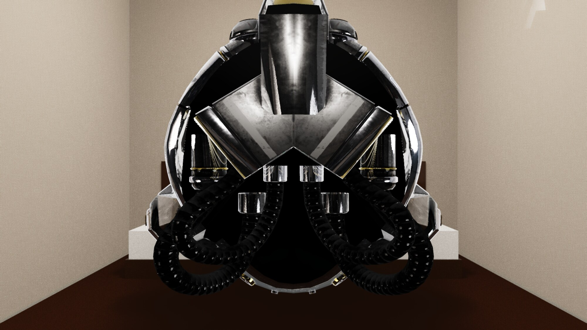
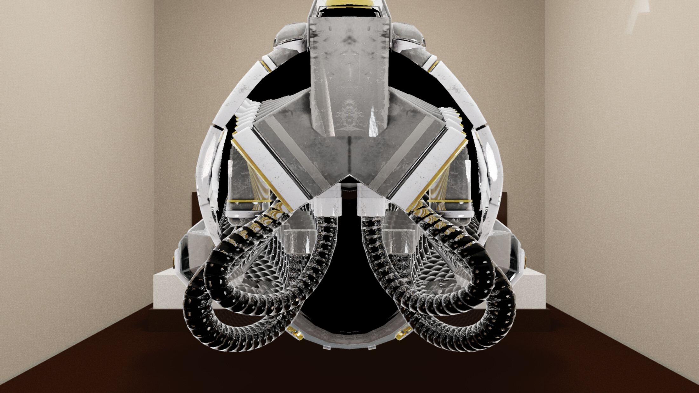
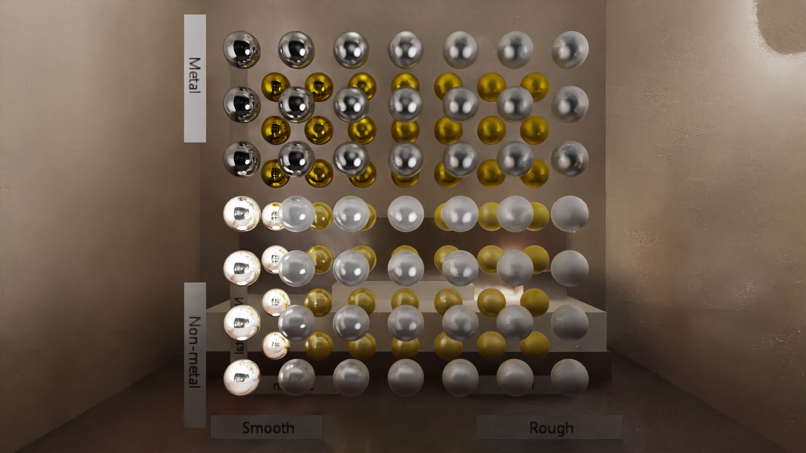

Freedo Technology
Physics Simulation & Rendering Intern · Remote
Feb 2026 — Present
- Fluid simulation and differentiable rendering systems using Taichi, NVIDIA Warp, and nvdiffrast.

Vulkan · CUDA · Neural Rendering · Simulation
I build the infrastructure that makes graphics possible — renderers, engines, and the math underneath.
MSc Computer Science, Linköping University (Graphics & Visualization). Most of my work sits at the intersection of GPU programming, rendering pipelines, and systems that other people build on top of. Currently a physics simulation & rendering intern at Freedo Technology; open to full-time engineering roles.

Damaged Helmet · PBR detail · deferred Lantern · emissive + PBR · path traced
Lantern · emissive + PBR · path traced

MetalRoughSpheres · BRDF calibrationC++20 · Vulkan · GLSL · ~37K lines
A standalone Vulkan engine I wrote from scratch. Hybrid renderer with a deferred G-buffer path and a hardware ray-tracing path sharing the same scene representation, bindless resources, and acceleration-structure workflow.
Implements Cook-Torrance GGX BRDF, cascaded shadow maps, TAA, SSAO, and screen-space reflections on the deferred side; RT shadows and RT reflections via Vulkan KHR ray-tracing on the other. Physics layer uses GJK/EPA collision detection over a BVH.
Renders above: Khronos glTF Sample Assets rendered end-to-end through the engine — helmet (deferred PBR, full material stack), lantern (path-traced emissive driving scene lighting), and MetalRoughSpheres (BRDF calibration — the reference test rendering engineers use to verify their roughness / metallic response). 4K output, Intel OIDN denoiser.


C++ · C# · WinUI · Hardware Control · ~8K lines
Built CamMatrixCapture: a 12-camera synchronized capture system with staggered trigger firmware, Bluetooth-controlled turntable automation, and a state-machine driven capture workflow. Indoor object captures feed NeRF / 3DGS training; outdoor work includes drone reconstruction of Gränsö Castle.
Released a 209 GB public dataset focused on challenging materials — reflective, transparent, translucent surfaces that traditionally break neural rendering methods.
The benchmarking contribution: 3D Gaussian Splatting reaches ~11 dB PSNR above NeRF on reflective surfaces — a surprisingly large gap, with clear implications for production capture pipelines.
Monte Carlo path tracer with BVH acceleration, Russian roulette termination, multiple material models. 40 FPS on RTX 4060 at 1280×720.
Repo ↗GPU-accelerated SPH fluid with Marching Cubes surface reconstruction and CUDA/OpenGL interop for real-time visualization.
Full Xiangqi game in C++/Qt with a Deep Q-Learning agent, CUDA-accelerated training, self-play, and model save/load.
Repo ↗I care about infrastructure, not app surface area. The systems I find interesting are the ones other engineers build on top of: a renderer, a capture pipeline, a physics engine, a GPU scheduler. I profile before optimizing, I read the paper before reimplementing, and I'd rather ship one well-understood 37K-line engine than three shallow demos.
"Skiing Action Analysis Based on OpenPose"
Intelligent Computer and Applications, 2022